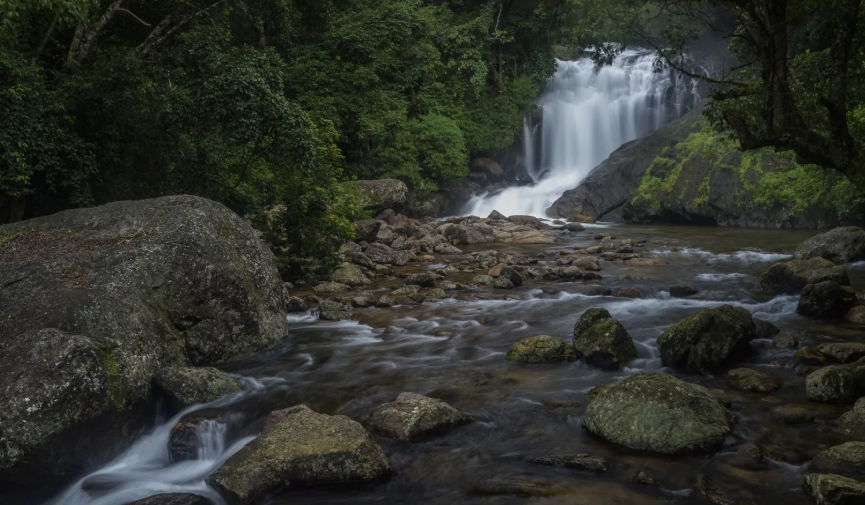
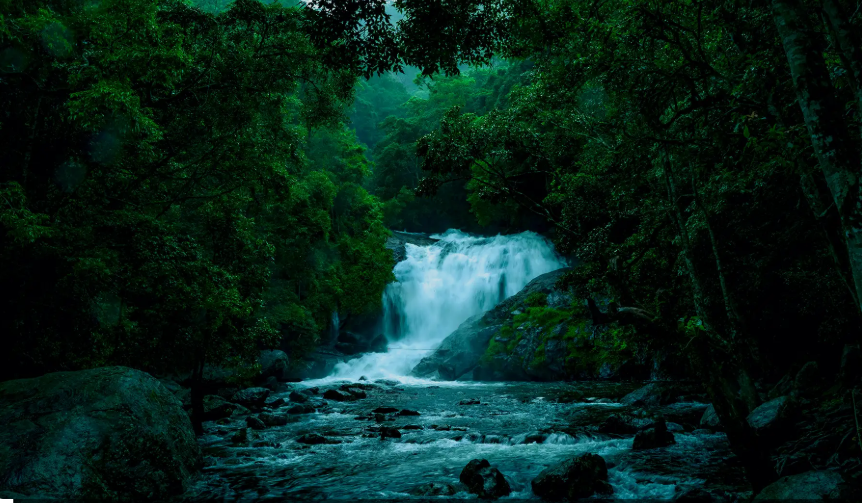
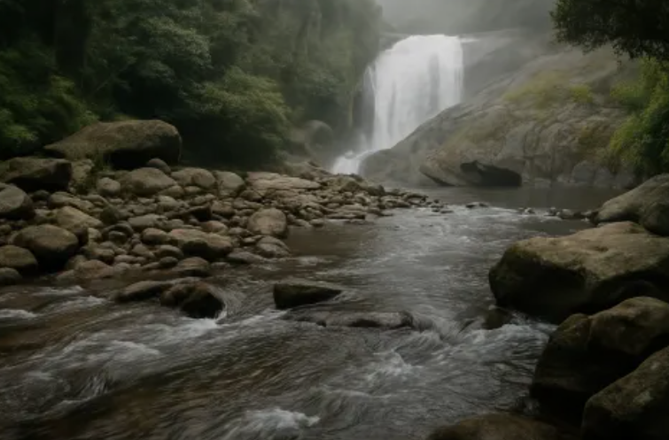
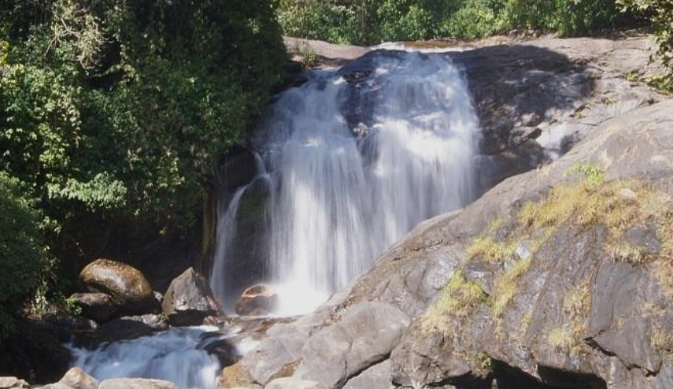
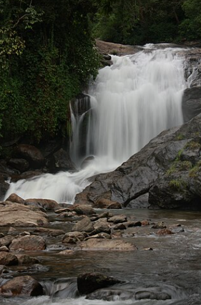

Lakkam Waterfalls is a beautiful waterfall located near Munnar in the Idukki district of Kerala. It is formed by the Eravikulam River as it flows through rocky cliffs and dense forests of the Western Ghats. Surrounded by lush greenery and cool mountain air, the waterfall is one of the most popular natural attractions in Munnar.
Visitors can enjoy the scenic beauty, relax by the flowing water, and capture beautiful photographs of the surroundings. The area is ideal for picnics, short nature walks, and sightseeing. During the monsoon season, the waterfall becomes more spectacular, attracting many tourists. Lakkam Waterfalls is a perfect destination for nature lovers and families visiting Munnar.





Lakkam Waterfalls, also known as Lakkom Waterfalls, is one of the most beautiful waterfalls near Munnar in Idukki District, Kerala. It is located about 25 km from Munnar on the Munnar–Marayoor Road. The waterfall originates from the Eravikulam Plateau inside Eravikulam National Park and is surrounded by dense forests and rocky cliffs. It is a popular destination for nature lovers, photographers and trekkers. 0
Lakkam Waterfalls has long been a natural attraction in the Western Ghats. As tourism in Munnar developed, it became one of the most visited waterfalls in Idukki. Today, it is managed as an eco-tourism destination where visitors can enjoy the beauty of nature while protecting the surrounding forest ecosystem. 1
The waterfall cascades over rocky cliffs into a natural pool surrounded by thick forests. Visitors can enjoy nature walks, trekking, photography, picnics and the refreshing atmosphere. The surrounding landscape of the Western Ghats makes it one of the most scenic waterfalls in Kerala. 2
The surrounding area is rich in evergreen forests, bamboo, medicinal plants and native trees. Visitors may also spot colourful birds, butterflies, Nilgiri langurs and other wildlife found in the Western Ghats.
Today, Lakkam Waterfalls is one of the most popular eco-tourism destinations near Munnar. It attracts thousands of visitors every year because of its natural beauty, trekking opportunities, refreshing pools and peaceful forest surroundings. 3